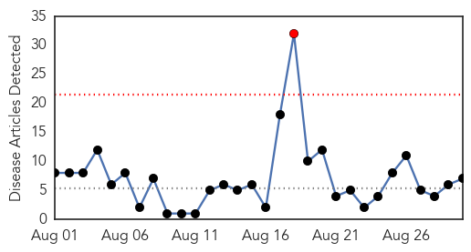
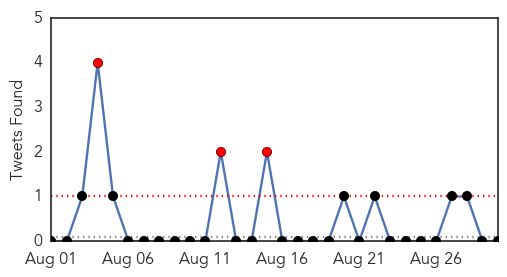
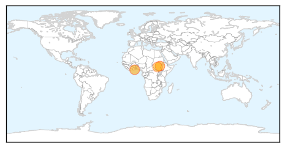

Yellow Fever
30-Day Web Trend
8 alerts, 0 warnings

30-Day Twitter Trend
0 alerts, 0 warnings

Article Locations

Article Confidences

Top Articles:
-
No articles found for Aug 30, 2014
Top Tweets:
-
No tweets found for Aug 30, 2014
Cholera
30-Day Web Trend
1 alerts, 0 warnings

30-Day Twitter Trend
6 alerts, 0 warnings

Article Locations
Article Confidences
Top Articles:
- 0.964
- TRF-No respite for South Sudan: cholera down but malaria, parasitic disease up
- 0.964
- Editorial: Millennium city in health crisis
- 0.961
- cholera down but malaria and parasitic disease up – MSF
- 0.954
- No Respite For South Sudan: Cholera Down But Malaria, Parasitic Disease Up
- 0.740
- South Sudan Has a Choice... Between Horror and Misery-SudaneseOnline
- 0.638
- Cholera Outbreak: Cape Coast Records Cases
- 0.510
- President Mahama pushes for weekly clean up exercise to combat cholera
Top Tweets:
-
No tweets found for Aug 30, 2014